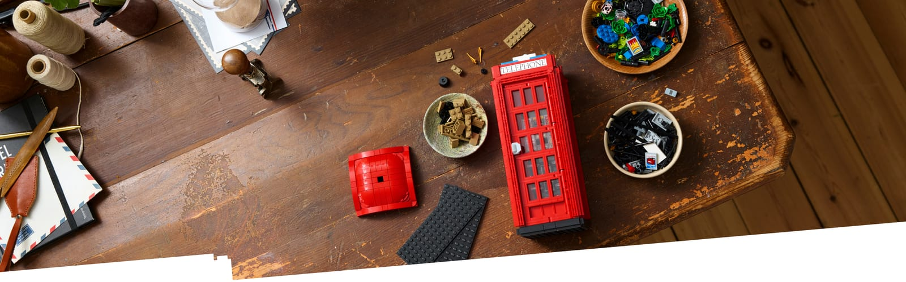
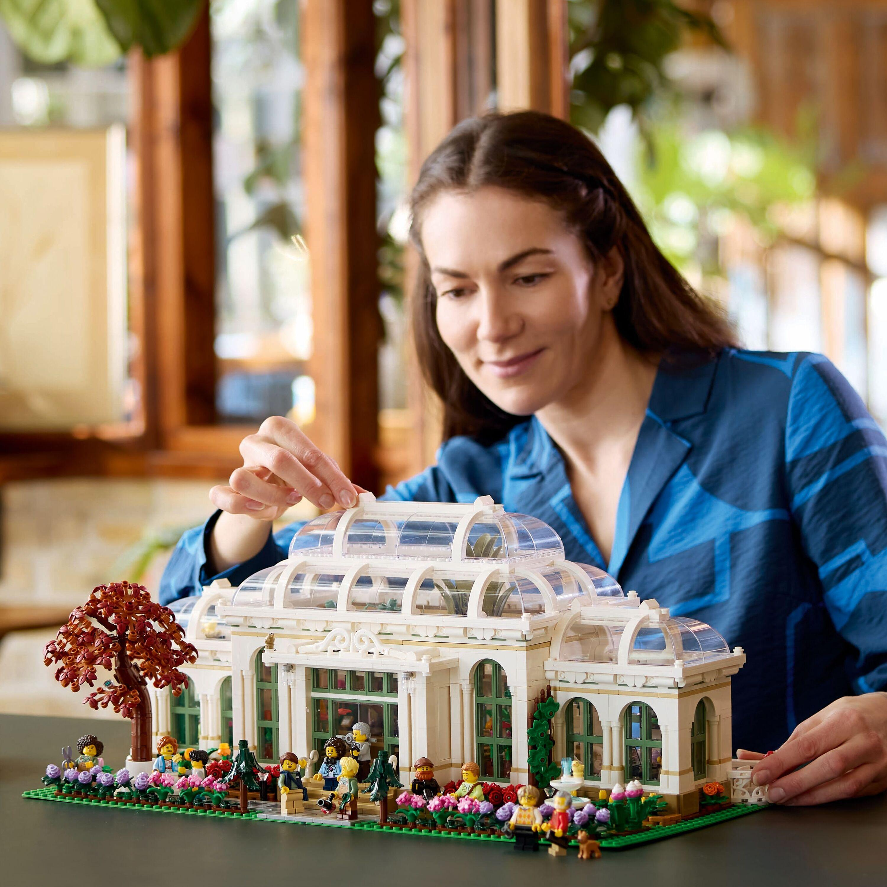
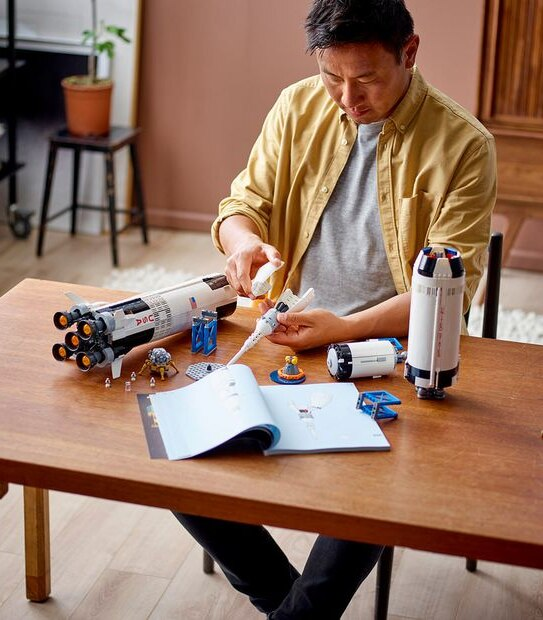
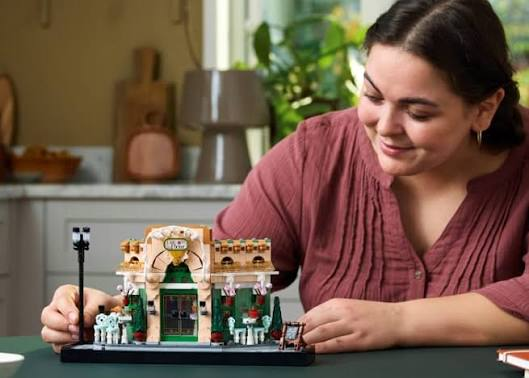

Hvor ideer bliver til
projekter
Kom i gang
Hvor vil du begynde?

Kom godt i gang
Ny til LEGO? Få styr på det grundlæggende, og find ud af, hvad du skal bruge for at komme i gang.

Dit første byggeprojekt
Klar til at bygge? Vi guider dig trin for trin gennem dit første lille LEGO-projekt.

Find inspiration
Fra blomster til bygninger. Udforsk nye idéer, og find det, du har lyst til at bygge.

LEGO er også for voksne
LEGO handler ikke kun om at følge en byggevejledning. Det handler også om at være kreativ, finde ro og skabe noget med hænderne.
Uanset om du er til blomster, arkitektur eller dine helt egne idéer, er der plads til at bygge på din måde.